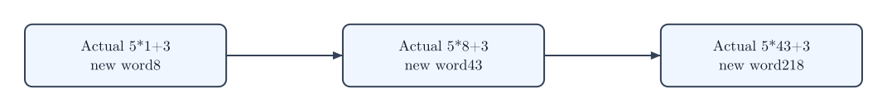
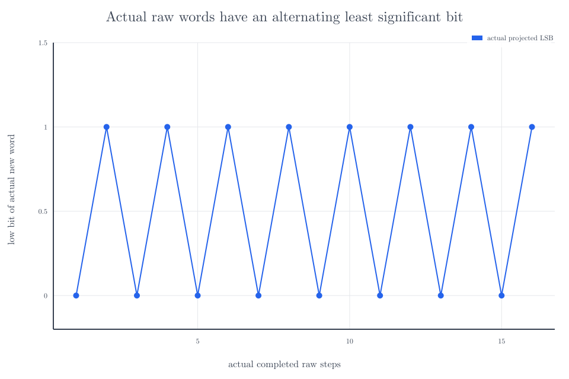
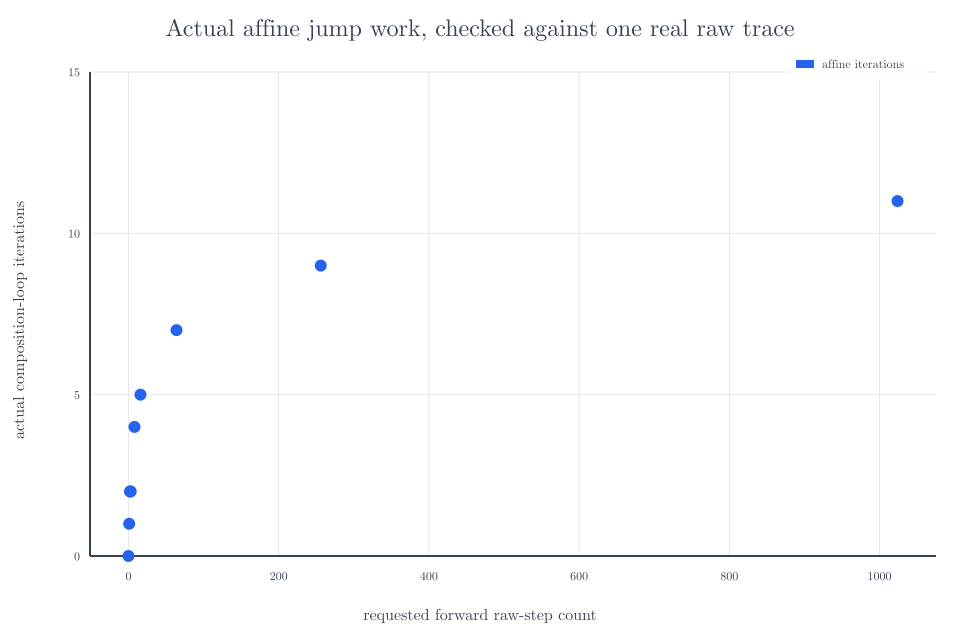
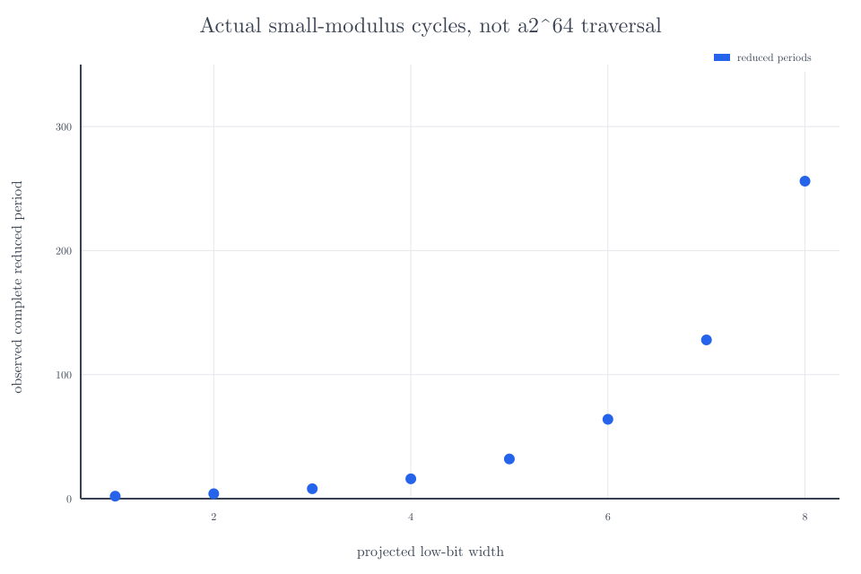

Linear congruential pseudorandom generation
Abstract
A mixed LCG is an unsigned affine recurrence. Its full-period theorem describes how long the state cycle is, while low-bit cycles, predictability and lattice structure are different questions. We retain the original seed1/multiplier5/increment3 example, expose actual producing multiply/add records, compare raw consumption with native affine jump composition and inspect complete small-modulus orbits without pretending to traverse2^64 states.
Unsigned affine dynamics
The recurrence is
Defined unsigned overflow is exactly the intended modular reduction. The full-period mixed-generator conditions for modulus264 are c odd and a congruent1 modulo4. These are stricter than merely saying “custom odd parameters”: the native engine constructor rejects multiplier3 and even increments. Every seed is allowed. The theorem gives period264 for admitted parameters; a short empirical trace is not evidence that every state was visited, nor does a long period imply independent samples, security or good low-bit behavior.
Original three actual states
Retain seed1, multiplier5 and increment3. Three real native steps return8,43,218. The shared next_step kernel records each original word, low64 product and committed output; ordinary next_u64 uses exactly that same producer. The diagram reads those actual steps rather than evaluating a report-side recurrence.
#include <dm/dm.hpp>
int main() {
std::filesystem::create_directories("build");
dm::random::LinearCongruential64 g(1, 5, 3);
auto t = dm::random::lcg64_trace(g, 3);
std::print("| actual original word | actual multiplier | actual low64 product | actual increment | " "actual committed word | actual product wrapped | actual add wrapped |\n| ---: | ---: | ---: " "| ---: | ---: | --- | --- |\n");
dm::graphics::Diagram d;
for (std::size_t i = 0; i < t.steps.size(); ++i) {
auto &e = t.steps[i];
std::print("| {} | {} | {} | {} | {} | {} | {} |\n", e.before,
e.multiplier, e.product, e.increment, e.after,
e.multiplication_wrapped, e.addition_wrapped);
d.node(std::to_string(i), {6. * i, 0},
std::format("Actual {}*{}+{}\nnew word{}", e.multiplier,
e.before, e.increment, e.after));
if (i)
d.edge(std::to_string(i - 1), std::to_string(i));
}
d.save_svg("build/lcg_original.svg");
}| actual original word | actual multiplier | actual low64 product | actual increment | actual committed word | actual product wrapped | actual add wrapped |
|---|---|---|---|---|---|---|
| 1 | 5 | 5 | 3 | 8 | false | false |
| 8 | 5 | 40 | 3 | 43 | false | false |
| 43 | 5 | 215 | 3 | 218 | false | false |

Actual wrap and the short least-significant-bit cycle
The production engine validates full-period parameters, while the pure step helper deliberately accepts arbitrary coefficients for arithmetic controls. At state=a=c=UINT64_MAX, the actual low64 product is1 and adding UINT64_MAX wraps to0; both wrap flags describe exact unsigned range overflow, not hardware instruction flags.
For an admitted mixed engine, a and c are odd, so the least significant bit obeys bit_next=bit_old+1 modulo2. It alternates deterministically with period2, despite the full state’s period2^64. The next figure uses actual raw engine words, projecting their low bits only for display. Full words remain printed; no low-bit pattern is presented as independent randomness.
#include <dm/dm.hpp>
int main() {
std::filesystem::create_directories("build");
const auto m = std::numeric_limits<std::uint64_t>::max();
auto wrap = dm::random::lcg64_step(m, m, m);
std::print("Actual full-range product {}; actual final word {}; multiplication wrapped {}; addition " "wrapped {}.\n\n| actual raw index | actual original word | actual new word | actual low bit " "| actual low4 residue |\n| ---: | ---: | ---: | ---: | ---: |\n",
wrap.product, wrap.after, wrap.multiplication_wrapped,
wrap.addition_wrapped);
dm::random::LinearCongruential64 g(1, 5, 3);
auto t = dm::random::lcg64_trace(g, 16);
std::vector<double> x, y;
for (std::size_t i = 0; i < t.steps.size(); ++i) {
auto &e = t.steps[i];
std::print("| {} | {} | {} | {} | {} |\n", i, e.before, e.after,
e.after & 1, e.after & 15);
x.push_back(i + 1);
y.push_back(e.after & 1);
}
auto p = dm::graphics::RPlot::create();
p.line(x, y, "actual projected LSB", {37, 99, 235}, 2).points(x, y, "",
{37, 99, 235},
5).y_limits(
-.2, 1.5).title("Actual raw words have an alternating least significant bit").x_label("actual completed raw steps").y_label("low bit of actual new word").save_svg("build/lcg_low_bit.svg");
}Actual full-range product 1; actual final word 0; multiplication wrapped true; addition wrapped true.
| actual raw index | actual original word | actual new word | actual low bit | actual low4 residue |
|---|---|---|---|---|
| 0 | 1 | 8 | 0 | 8 |
| 1 | 8 | 43 | 1 | 11 |
| 2 | 43 | 218 | 0 | 10 |
| 3 | 218 | 1093 | 1 | 5 |
| 4 | 1093 | 5468 | 0 | 12 |
| 5 | 5468 | 27343 | 1 | 15 |
| 6 | 27343 | 136718 | 0 | 14 |
| 7 | 136718 | 683593 | 1 | 9 |
| 8 | 683593 | 3417968 | 0 | 0 |
| 9 | 3417968 | 17089843 | 1 | 3 |
| 10 | 17089843 | 85449218 | 0 | 2 |
| 11 | 85449218 | 427246093 | 1 | 13 |
| 12 | 427246093 | 2136230468 | 0 | 4 |
| 13 | 2136230468 | 10681152343 | 1 | 7 |
| 14 | 10681152343 | 53405761718 | 0 | 6 |
| 15 | 53405761718 | 267028808593 | 1 | 1 |

Jumping by affine composition
Represent an affine map by(a,c). Composition gives
Binary exponentiation computes an exact jump using at most64 real composition iterations for an unsigned64 count, without dividing by a−1 or replaying that many raw steps. Its recorded stages are actual composition work, not a fabricated raw history. Compare jumps at selected counts with words read from one genuinely consumed1024-step trace. Zero count is the original seed. A jump function is pure and does not mutate any engine or its inherited cached normal draw.
#include <dm/dm.hpp>
int main() {
std::filesystem::create_directories("build");
dm::random::LinearCongruential64 g(1, 5, 3);
auto raw = dm::random::lcg64_trace(g, 1024);
std::vector<double> x, y;
std::print("| actual forward count | actual affine-jump result | actual raw-trace word | exact equality " "| actual composition iterations |\n| ---: | ---: | ---: | --- | ---: |\n");
for (std::uint64_t count : {0, 1, 2, 3, 8, 16, 64, 256, 1024}) {
auto j = dm::random::lcg64_jump(1, 5, 3, count);
const auto actual =
count ? raw.steps[count - 1].after : raw.initial_state;
std::print("| {} | {} | {} | {} | {} |\n", count, j.after, actual,
j.after == actual, j.stages.size());
x.push_back(count);
y.push_back(j.stages.size());
}
auto p = dm::graphics::RPlot::create();
p.points(x, y, "affine iterations", {37, 99, 235}, 6).y_limits(0, 15).title(
"Actual affine jump work, checked against one real raw trace").x_label(
"requested forward raw-step count").y_label("actual composition-loop iterations").save_svg("build/lcg_jump.svg");
}| actual forward count | actual affine-jump result | actual raw-trace word | exact equality | actual composition iterations |
|---|---|---|---|---|
| 0 | 1 | 1 | true | 0 |
| 1 | 8 | 8 | true | 1 |
| 2 | 43 | 43 | true | 2 |
| 3 | 218 | 218 | true | 2 |
| 8 | 683593 | 683593 | true | 4 |
| 16 | 267028808593 | 267028808593 | true | 5 |
| 64 | 9287442161278236225 | 9287442161278236225 | true | 7 |
| 256 | 14839973063970347265 | 14839973063970347265 | true | 9 |
| 1024 | 17104543874823316481 | 17104543874823316481 | true | 11 |

Complete small-modulus orbits and explicit failure controls
The low b bits form an autonomous recurrence modulo2^b: reducing a full unsigned step and then masking is exactly the same modular dynamics. The native bounded orbit helper computes that reduced recurrence directly without consuming a full engine. It stops only on a real repeated residue or an explicit step budget, and reports an incomplete prefix honestly.
For b1 through8, admitted a5,c3 has complete period2b. At b4, pure diagnostic controls a3,c1 and a5,c0 have shorter periods, while a5,c0 at seed0 is fixed. The production constructor rejects those invalid full-period parameter controls; their reduced orbit is still scientifically inspectable through the explicit pure helper. A width20 orbit with only32 permitted steps is incomplete; no264 empirical period claim is inferred.
#include <dm/dm.hpp>
int main() {
std::filesystem::create_directories("build");
std::vector<double> x, y;
std::print("| actual reduced width | actual complete | actual observed period | full-period theorem " "reference for this reduced modulus |\n| ---: | --- | ---: | ---: |\n");
for (unsigned b = 1; b <= 8; ++b) {
auto o =
dm::random::lcg64_low_bits_orbit(1, 5, 3, b, std::size_t{1} << b);
std::print("| {} | {} | {} | {} |\n", b, o.complete, o.period,
std::size_t{1} << b);
x.push_back(b);
y.push_back(o.period);
}
std::print("\n| explicit seed | explicit a | explicit c | actual reduced4 period |\n| ---: | ---: | " "---: | ---: |\n");
for (auto parameters : std::vector<std::vector<std::uint64_t>>{{0, 3, 1},
{1, 5, 0},
{0, 5, 0}}) {
auto o =
dm::random::lcg64_low_bits_orbit(parameters[0], parameters[1],
parameters[2], 4, 16);
std::print("| {} | {} | {} | {} |\n", parameters[0], parameters[1],
parameters[2], o.period);
}
auto short_run = dm::random::lcg64_low_bits_orbit(1, 5, 3, 20, 32);
std::print("\nActual width20 prefix: performed steps {}; complete {}; period placeholder {}.\n",
short_run.states.size() - 1, short_run.complete, short_run.period);
auto p = dm::graphics::RPlot::create();
p.points(x, y, "reduced periods", {37, 99, 235}, 6).y_limits(0, 350).title(
"Actual small-modulus cycles, not a2^64 traversal").x_label(
"projected low-bit width").y_label("observed complete reduced period").save_svg("build/lcg_orbits.svg");
}| actual reduced width | actual complete | actual observed period | full-period theorem reference for this reduced modulus |
|---|---|---|---|
| 1 | true | 2 | 2 |
| 2 | true | 4 | 4 |
| 3 | true | 8 | 8 |
| 4 | true | 16 | 16 |
| 5 | true | 32 | 32 |
| 6 | true | 64 | 64 |
| 7 | true | 128 | 128 |
| 8 | true | 256 | 256 |
| explicit seed | explicit a | explicit c | actual reduced4 period |
|---|---|---|---|
| 0 | 3 | 1 | 8 |
| 1 | 5 | 0 | 4 |
| 0 | 5 | 0 | 1 |
Actual width20 prefix: performed steps 32; complete false; period placeholder 0.

Contracts and verification
The engine requires multiplier1 modulo4 and an odd increment, owns its raw word and parameters, and preserves the historical default constants and raw stream. Both raw next interfaces share the actual modular step kernel. Raw consumption leaves the inherited normal spare unchanged; copied engines retain their own raw/cache state. No cryptographic unpredictability, statistical independence or multidimensional quality guarantee follows from the period theorem.
Consuming trace admits count+1 logical records and reserves all trivial step storage before changing the caller. Its million-record default counts one explicit original word and each actual step record, excluding field/capacity/final-state/output/runtime copies and bytes/RAM;0 disables only that optional cap. Jump records at most64 actual affine-composition iterations. Reduced orbits accept widths1..20 and real step budgets0..1048576; each stored state is actual, and only a repeated residue establishes complete/cycle metadata. Empty budgets return the initial incomplete prefix.
Native tests verify raw recurrence and exact jumps, full low-bit cycles,
cache-preserving consumption, complete capture admission, full-range wrap
evidence and ownership. The ten-report batch passed 101 native CTest cases, 34
directly instrumented ASan/UBSan cases, 103 compiled/executed public examples,
515/515 scoped file definitions plus 10 exact LCG class definitions, and ten
representative clangd hovers. Independent Python integer/Fraction,
explicit-label graph search, quadratic sequence DP and full weighted-stump
references passed 69430 records across all ten topics, including a separately
fitted held-out Iris model. Frozen ordinary compatibility passed 1000 Lex-BFS
orders, 1000 library sorts, 100 LBG codebooks, 100 complete five-round
LogitBoost ensembles and 200 LLL bases; corrected LBG final labels/objectives
are intentionally excluded from historical compatibility. All 4 complete
programs executed and all 4 native figures were rendered and visually reviewed,
with clipped legends corrected and rerun. HTML/Markdown computed-result and
figure-byte checks gate legacy retirement. Repeatable receipts are retained in
build/mepml-conversion/batch-204-213/.
References
T. E. Hull and A. R. Dobell(1962), Random Number Generators, SIAM Review4(3),230–254. The full-period conditions are applied specifically to modulus2^64; bounded reduced-orbit observations and the implementation’s actual affine arithmetic are kept distinct from general statistical-quality claims.